栈溢出应该算是一个十分基础的东西了，之前自己学过，然后过了一阵子就忘了……这次争取别忘掉。
栈怎么就溢出了
我们在数据结构中所学的栈是一种特殊的数据结构，它满足先进后出，后进先出的特性。
在Linux下，一个程序的地址空间实际上是这样的形态（当然我们并不需要去考虑操作系统层面和硬件层面的虚拟内存等问题）：
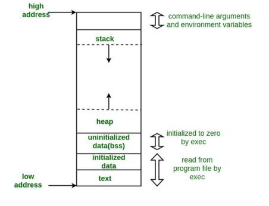
其中有两段，即stack和heap，是可以动态变化的。stack对应了我们所说的栈，而heap对应了我们所说的堆。
从图像中也可以看出来，栈的增长是从高地址到低地址的——也就是说，栈底出于高地址的位置，而栈顶处在低地址的位置。x86寄存器中的栈指针即esp，就指明了栈顶的位置，而栈基指针ebp则指明了栈底的位置。
一般来说，在函数中定义的局部变量等，都会被定义在栈上，而通过malloc分配的变量对应的空间则是在堆上。
1 | void test(){ |
函数的调用还有返回发生了什么
每当我们去调用一个函数的时候，我们都需要遵循一定的规则，这个规则也就是调用惯例。之前专门详细分析了几种调用惯例，这里不多说了，直接就拿最简单的来说。
1 |
|
在这段程序中，在调用函数inc(a)之前，main()函数做了这样的事情：
1 | 11b2: c7 45 f4 01 00 00 00 mov DWORD PTR [ebp-0xc],0x1 |
在x86中，call addr这条指令做的是这样的事情：将当前指令的下一条指令（上文中的add
esp,0x4这句指令）地址压入栈中，并掉转到addr对应的地址。
执行完了上面的指令之后，程序就会跳转进入inc()函数中。我们来看这个函数的指令：
1 | ; 下面的两条指令也就是所谓的函数序言 |
在执行完了这些部分之后，函数的堆栈实际上是这个样子的：
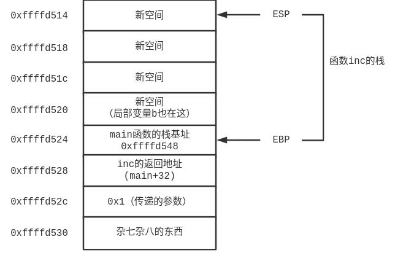
接下来的几条指令负责计算函数的结果：
1 | 1193: 8b 45 08 mov eax,DWORD PTR [ebp+0x8] |
接下来的部分就是函数最后的一些操作：
1 | 119f: c9 leave |
leave指令等价于mov esp, ebp并pop ebp。这条指令的作用在于清楚函数的栈，执行完之后，函数的栈是现在这样的情况：
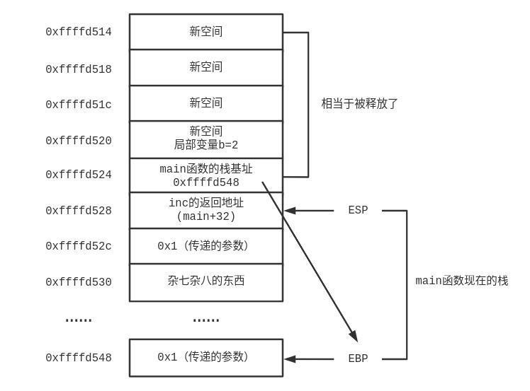
注意现在栈顶上的值是函数的返回地址——也就是说，下一步执行ret语句之后，程序就会跳转到这个返回地址（当然同时会把栈顶的元素弹出）。
接下来main函数会执行一部分的清栈工作等等（实际上对于stdcall和fastcall又是不一样的情况）。
如果栈塞不下了……
上面的例子中，函数里的局部变量是一个4字节的int类型。一个问题在于，如果函数里面有一个数组，那么在内存中是怎么样的布局？
1 | void test(){ |
我们来测试一下：
1 | pwndbg> stack 16 |
可以看出来，栈上面的这个数组增长的顺序是和栈的增长方向是反过来的——数组中前面的元素在靠近栈顶的地方，后面的元素在靠近栈底的地方。
这样一个问题就来了，如果这个局部变量占了实际上超过了我们给它大小的空间会发生什么事情？
我们可以试一下。
1 |
|
运行一下，然后：
1 | Job 1, './a.out' terminated by signal SIGSEGV (Address boundary error) |
SIGSEGV是段错误。 我们可以追踪一下哪里出了问题。
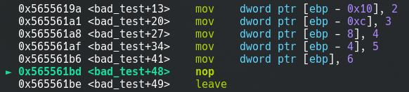
从gdb的调试中我们可以看到，a[5] = 6;这句话对应了mov dword ptr [ebp], 6这条指令。这条指令显然覆盖了EBP位置上面的值，这个值如果看上面的图的话，应该就能够发现这个地址上就是main函数的基址。
在leave指令之后，main函数的ebp的值是0x2。
我们把程序调试到那个位置上：
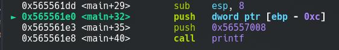
下一步是push dword ptr [ebp - 0xc]，可是EBP的值是0x6！
很明显：
1 | Program received signal SIGSEGV, Segmentation fault. |
段错误。在main函数试图访问某个地址的时候出现了问题——main函数并不知道自己的ebp已经被修改了，它仍在试图去访问基于ebp偏移的栈上的变量——而这个内存地址现在是不合法的了。
前面是修改了栈基址，如果我们能够更进一步去修改返回地址呢？
1 |
|
根据上面的情况，我们可以猜到当函数执行ret的时候，会返回到一个错误的地址。
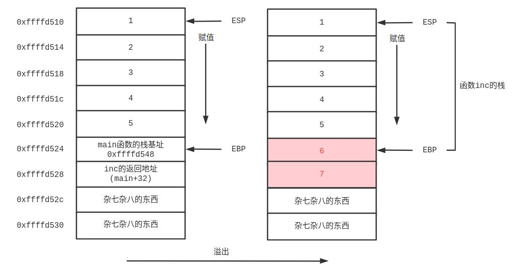
在执行完函数中的赋值操作之后，程序的栈是这个样子。接下来在返回时，整个程序的栈更是惨不忍睹：
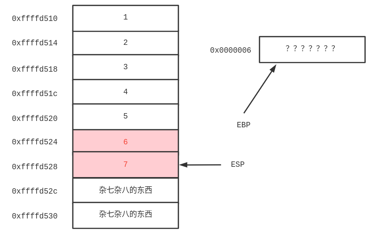
下面一步ret到的地方自然是无效的地址，程序在这之后就会崩溃。
这个也就是所谓的“栈溢出”。
能不能利用
控制流是不是出问题了？
ret指令会返回到现在栈顶上存放的地址。那么如果我们任意修改这个位置上的值，理论上也就能够让程序跳转到任意一个地方了。
前面程序出现了SIGSEGV是因为执行的地址无效，我们现在需要的是填一个有效的地址进去：
1 |
|
在运行之后，我们可以看到程序输出了：
1 | $ ./a.out |
很明显，impossible这个从来没被调用的函数被执行了。在执行完函数bad_test后，程序尝试返回到main函数。但是这个时候main函数的返回地址已经被替换成了impossible函数的地址——程序就会转而去执行这个impossible函数。
这也就是说明了程序为什么会执行impossible函数。
再进一步看，我们的程序是通过ret指令进入到impossible函数中的，和正常的函数调用并不一样——这时候并没有一个call impossible指令去把执行完之后的返回地址压入栈中。也就是说，程序执行完impossible之后，它就不知道该返回哪里了。本来在执行impossible函数的ret指令时，栈顶应该是调用方压好的返回地址，但是没人去做这件事，栈顶现在是先前某个函数执行过程中留下的痕迹。
然后，程序就会跳转到这个不知道哪里的地方，接着程序就会崩溃。
实际上我们可以做一些更有趣的事情：
1 |
|
一个程序的栈中被溢出了多个地址，这是它输出发生的变化：
1 | $ ./a.out |
这张图可以来说明发生了什么——我们往地址中有意填充了一系列函数的返回地址，程序也就会顺着我们填充的地址来进行跳转。
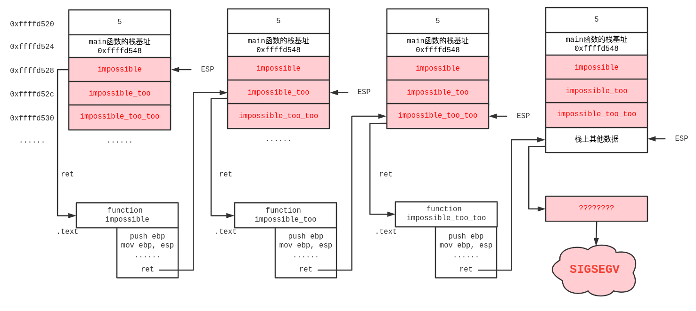
这样子，我们构造了一条控制流来影响程序的运行。
如果有输入的话，然后ret2text
这样的话，如果这个程序有输入……
1 |
|
gets函数的一个特点在于，它不会检查读入了多少字符。也就是说，尽管input只能放下16个char，gets也不会在输入了16个字符的时候停下来。
那这样，多余的输入就会冲入栈上的剩余空间。
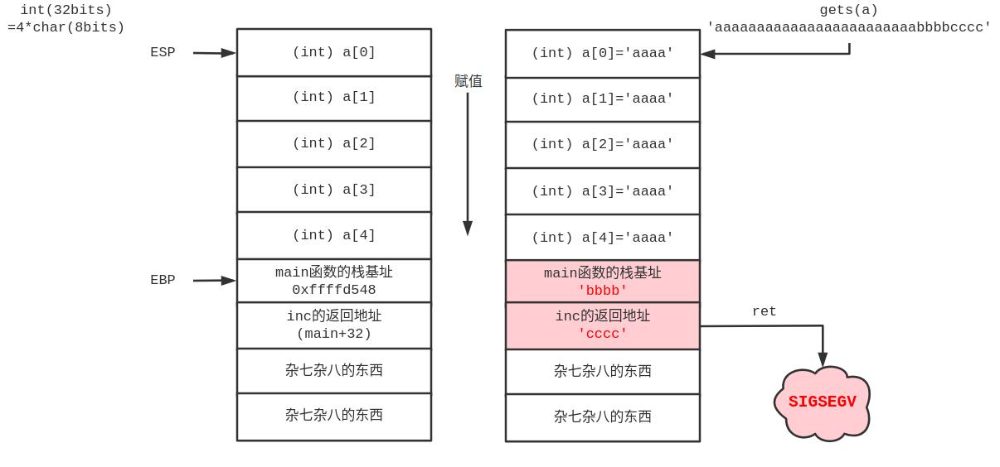
如果我们去有意构造程序的输入，那我们也就能够去控制程序的运行。通过反编译工具，我们能够看到函数impossible的地址：
1 | 08049186 <impossible>: |
我们就需要想法设法将0x08049186这个地址覆盖到bad_test函数的返回地址。来看这个函数的指令：
1 | 080491a3 <bad_test>: |
在调用gets函数之前，程序通过lea eax, [ebx-0x18]指令将[ebx-0x18]这个地址放入了eax寄存器中。接下来，eax被压入栈中。也就是传递给函数gets的参数是eax即[ebx-0x18]这个地址。这个地址实际上就是字符串读入的位置也就是变量input。
那么如果我们读入0x18个字符，便会正好覆盖到ebx的位置上方：
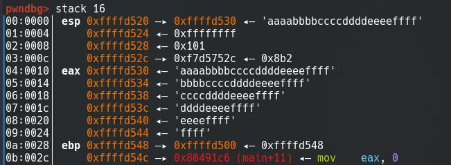
如果多覆盖一些则会溢出到返回地址中：
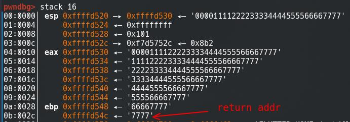
可以看到程序返回到了我们写上去的地址：
1 | 0x80491b5 <bad_test+18> add esp, 0x10 |
那么我们只需要去构造一个输入的字符串"a"*(0x18 + 0x4) + addr(impossible)就行了：
1 | from pwn import * |
可见我们使得程序跳转到了impossible函数并运行了里面的execve命令。
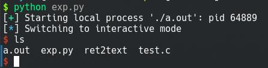
获取控制权，达成。这个例子实际上控制程序跳转到.text段中的已有的代码，这个手段也就是被称为ret2text。这种利用ret指令的跳转来构造特定控制流的方法叫做ROP（Return
Oriented Programming）。
事实上安全检查关闭了
前面其实有一个问题并没有说明：在前面的测试中，安全检查是已经被关闭的。
我们在使用gcc编译程序的时候，设置了-fno-stack-protector选项，这个操作禁用了栈溢出的防护。在编译时去掉这个选项，执行脚本时程序报错：
1 | *** stack smashing detected ***: terminated |
这个安全机制被称为canary（金丝雀）。过去在矿井中，一些矿工会携带一只金丝雀。因为金丝雀对矿井中的有毒气体非常敏感，当有毒气体浓度增加，金丝雀会中毒而死，而矿工可以得到警告逃离危险区域。
对于这段程序：
1 | void bad_test(){ |
我们来看一下设置了canary之后程序的变化：
1 | 08049186 <bad_test>: |
如果程序出现栈溢出的话，在EBP和返回地址被覆盖之前，Canary就已经被改变了，这样程序的控制流就会转入__stack_chk_fail中，这个函数会执行错误处理操作并停止程序的继续运行，避免被攻击者利用。
如果我们用checksec之类的工具来查看的话，可以看到程序的各个安全参数：
1 | RELRO STACK CANARY NX PIE RPATH RUNPATH Symbols FORTIFY Fortified Fortifiable FILE |
如果不是ret2text
在实际的程序里一般是不会像上面那样留一个大大的execve('/bin/sh')的后门的。这种程序里没有直接留下可以被调用的代码的情况，可能得需要自己去构造一个后门来插进去。
一种思路是ret2shellcode，也就是控制程序返回到我们设置的shellcode中。这个shellcode实际上就是我们设置的能够完成一些功能（比如说拿到权限）的一串代码。
这种思路的实现条件还算是比较苛刻——我们shellcode设置的位置需要能够被执行。怎么去理解这个问题呢？
现在许多系统都有数据执行保护（Data Execution Prevention, DEP），这个保护的作用是防止攻击者修改正在执行的程序指令。内存中的一些区块会有一个NX标记（No EXecution），表明这个区块是不可执行的。较多的情况下，一个程序应该满足能够被写入的区块不可被执行，能够被执行的区块不可被写入。
上面一个程序checksec返回的结果就显示NX enabled，也就是说像栈这种可以被写入的区块上面的内容不可以被作为指令来执行。
拿这个程序来说。
拖进IDA反汇编之后得到：
1 | int __cdecl main(int argc, const char **argv, const char **envp) |
通过checksec我们会看到程序基本上处于无保护的状态：
1 | RELRO STACK CANARY NX PIE RPATH RUNPATH Symbols FORTIFY Fortified Fortifiable FILE |
通过IDA查看可以发现变量buf2在.bss段上：
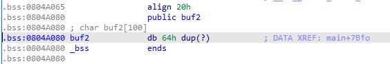
通过gdb调试之后可以注意到这里是可以被执行的：
1 | LEGEND: STACK | HEAP | CODE | DATA | RWX | RODATA |
那么我们可以这样来进行攻击：构造一段可以被执行的shellcode，通过gets函数读入s变量中，同时产生一个栈溢出，让main函数的返回地址指向.bss段的buf2变量的位置。接下来程序会将s的shellcode复制到buf2中。这样，在main函数返回的时候，就会跳转到.bss段的buf2变量位置执行我们的shellcode。
我们可以直接使用pwntools构造shellcode：
1 | shellcode = asm(shellcraft.sh()) |
接下来就是构造栈溢出：
1 | 804858c: 8d 44 24 1c lea eax,[esp+0x1c] |
通过objdump查看main函数的汇编可以看到，在执行gets函数前被压入栈中的eax存放的就是字符串char s[]的地址。这个地址是相对于esp的偏移，而需要构造payload我们要知道相对于ebp的偏移。我们可以通过动态调试得到偏移：
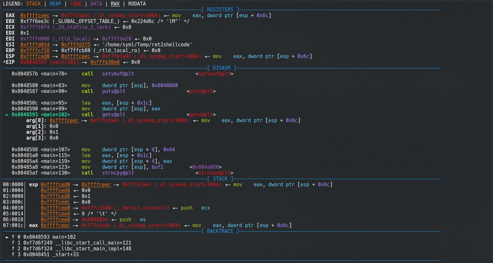
可以看出来，esp相对于ebp的偏移是0xffffcf58-0xffffced0=0x88，char s[]相对于esp的偏移是0x1c，那么char s[]相对于ebp的偏移就是0x88-0x1c=0x6c。再加上EBP占据的4个字节，所以返回地址的位置就在偏移0x70的位置上。
另外一种简单的方法是直接使用pwntools的功能：通过pwn cyclic 200这样的命令生成足够长度的字符串，输入进去之后会出现栈溢出，这个时候去查看EIP的值，通过pwn cyclic -l <pattern>就可以知道偏移。
所以说构造的栈溢出的payload应该是：shellcode+'A'补全0x70+buf的地址。
可以构造payload：
1 | from pwn import * |
ok。拿张图说明一下：
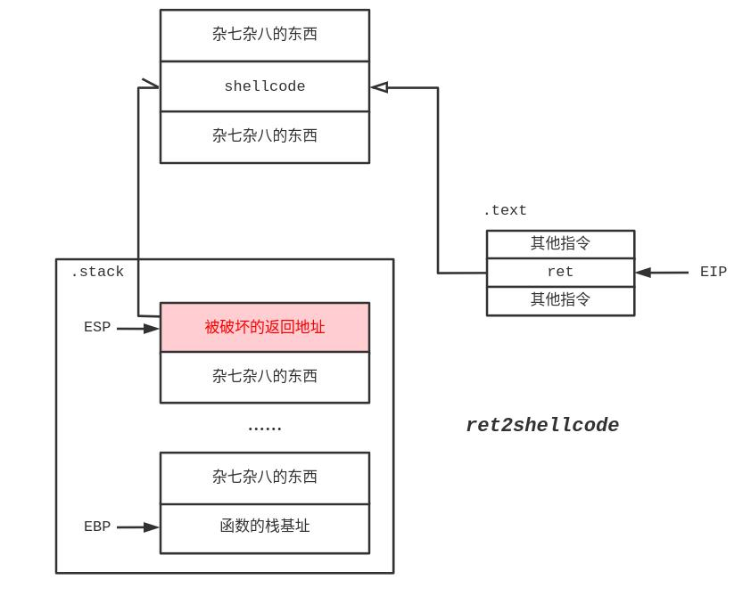
更进一步，ret2syscall
前面的ret2shellcode有着比较严格的条件，就是要求NX disabled。如果程序设置了数据执行保护，那么这种方式就无法实现了。
一个思路是去构造ROP chain。ROP chain可以利用程序中间的一系列ret指令来实现修改寄存器、进行系统调用等功能。
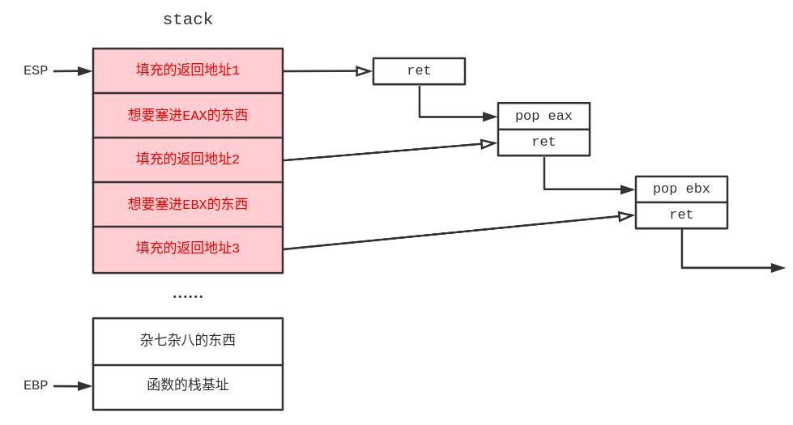
如果我们想要进行一个系统调用的话，我们需要给一些寄存器设定好参数。32位系统调用execve的时候，系统调用号EAX为0xb，EBX为一个指向/bin/sh（或者你要调用的命令）的指针，ECX和EDX都是0，设置好四个寄存器之后，执行指令int 0x80就可以进行系统调用了。
以设置EAX为例，我们寻找到一段代码pop eax; ret。接下来我们向栈中压入（溢出）三个数据：返回地址，0xb，前面代码段的地址。
这样，我们运行到ret语句时，就会跳转到pop eax; ret，执行完pop eax之后，现在栈顶的0xb弹出进入eax，接下来再ret到我们设置的地址。这样子我们也就完成了一个寄存器的修改。
以这个程序为例。
拖进IDA进行反编译，看到main函数存在栈溢出：
1 | int __cdecl main(int argc, const char **argv, const char **envp) |
同时跑一下checksec：
1 | RELRO STACK CANARY NX PIE RPATH RUNPATH Symbols FORTIFY Fortified Fortifiable FILE |
程序开启了NX，那么也就不能ret2shellcode。
1 | EBP 0xffffd598 —▸ 0x8049630 (__libc_csu_fini) ◂— push ebx |
通过gdb调试可以发现，返回地址相对于数组v4基址的偏移还是0xffffd598-0xffffd510-0x1c+0x4=0x70。
那么我们就开始构造一个ROP chain：
首先需要设置EAX的值为0xb，我们通过ROP
gadget寻找这样的指令序列：
1 | $ ROPgadget --binary rop --only 'pop|ret' | grep 'eax' |
我们选择第二个。
接下来同样，寻找设置EBX的指令序列：
1 | $ ROPgadget --binary rop --only 'pop|ret' | grep 'ebx' |
寻找设置ECX的指令序列：
1 | $ ROPgadget --binary rop --only 'pop|ret' | grep 'ecx' |
发现第二条指令能够同时设置EBX,ECX,EDX，我们就直接选择这一条。
以及字符串'/bin/sh'：
1 | $ ROPgadget --binary rop --string '/bin/sh' |
还有syscall(int 0x80)：
1 | $ ROPgadget --binary rop --only 'int' |
接下来就是关于指令的顺序：在栈溢出之后ret，程序会先执行我们设置的地址处的指令pop eax ; ret，然后执行pop edx ; pop ecx ; pop ebx ; ret，最后执行int 0x80。
栈上应该是这样的布局：
1 | +----------+ |
这样我们可以编写脚本：
1 | from pwn import * |
运行，getshell.
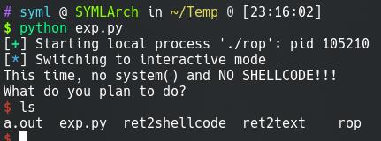
参考资料
[1] https://ctf-wiki.org/pwn/linux/user-mode/stackoverflow/x86/stack-intro/